Animaze Desktop: How to use Leap Motion Hand Sensors with Live2D avatars?
Making your Live2D avatar compatible with Ultraleap’s Leap Motion Controller is not for the faint of heart. As neither Live2D nor Ultraleap designed their product with the other in mind, it takes patience and tuning to make the two systems harmonize. Luckily, if this is too much for you to take on alone, there is a fantastic community of Live2D artists that you can commission to update your Live2D avatar rig. You can find an artist to work with here.
OK, for those who have not been scared off. Good on you! This guide aims to give you the building blocks by walking you through the process using the free-to-download sample Hiyori Momose.
Step 1: Increasing your avatar’s arms range of motion in Live2D’s Cubism Editor
Before you can get started connecting your avatar to an Ultraleap controller, you need to make sure that your avatar’s arms and hands support movement.
Because most streamers only use face tracking, it is likely that your avatar was not built with this capability in mind and will need to be updated.
Increasing your avatar’s range of motion begins in Live2D’s Cubism editor.
Install the Cubism Editor here: https://www.live2d.com/en/
Live2D has all sorts of great tutorials, which you can find here
Once you have rigged your Live2D model, it’s time to move over to the Animaze Editor.
Step 2: Import your Live2D avatar into the Animaze Editor
-
Open the Animaze Editor from your Steam Library. Select Tools from the pull-down menu and click on Animaze Editor.
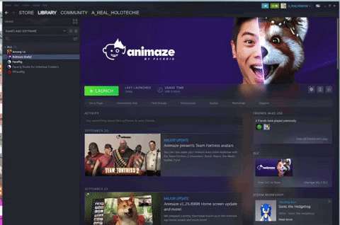
-
In the Assets menu, select Import L2D Avatar. Find your avatar JSON file and click Open.
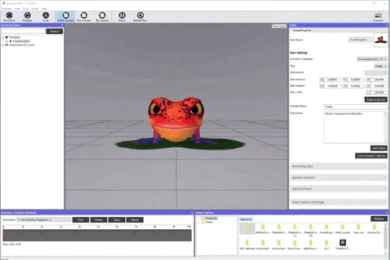
Step 3: Acquaint yourself with your Avatars Parameters
For a full list of Animaze Parameters see this post:
-
On the right-hand side, in the Editor Menu, expand the Live2D options.
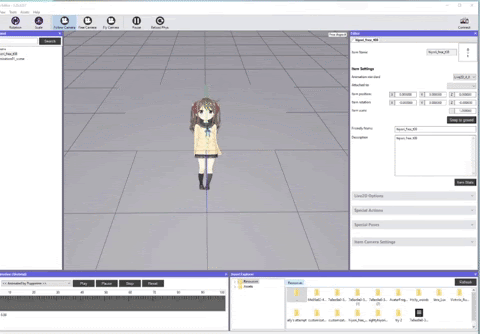
-
Scroll down to the Parameter Debugger and expand.
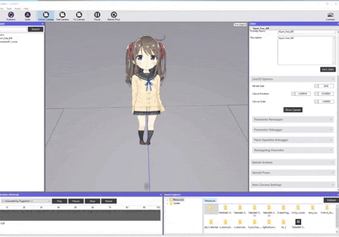
-
Find the parameters that are labeled ParamArmLA and ParamArmRA.
-
Play around with the sliders. The sliders give you a sense of the range of motion the avatar supports. (Changing that range of motion happens in the Cubism Editor).
Step 4: Add Retargeting Overrides
-
Start by clicking Retargeting Overrides
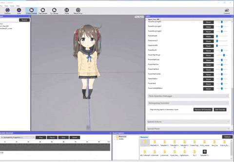
-
Click Add Override
-
Select ParamArmLA
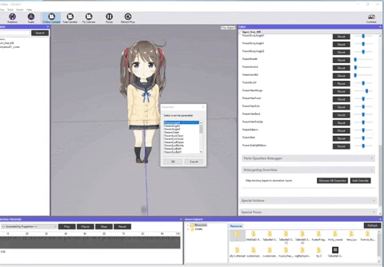
-
Click on Add Input
-
Select HandL_LR (NOTE there are a myriad of relevant inputs you can add. Experiment with the inputs to get best results)
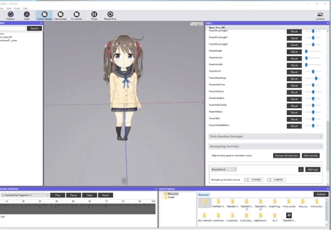
-
Repeat the process with ParamArmRA and HandR inputs.
Step 5: Check your progress so far
-
On the left-hand hierarchy panel, right-click the model name and press save.
-
To export from the Editor, right-click and select Bundle. Select where you want the export to save.
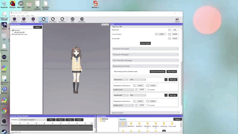
-
Open Animaze
-
In the avatar drawer, click on the plus sign and select your avatar.
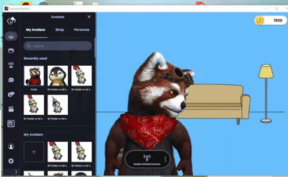
-
Connect your Leap Motion controller by going to advance configurations> select tracker and Leap Motion
-
Turn the feed so you can see what the tracker is picking up (more on how to best use the Leap Motion Controller in this FAQ: https://www.animaze.us/faq/animazedesktop/ultraleap)
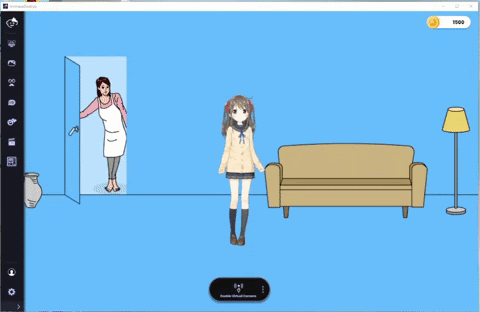
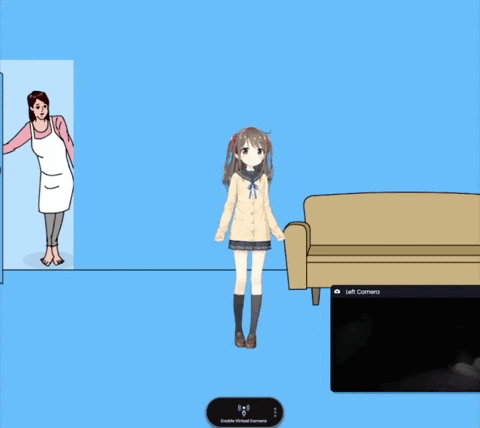
Wooo! The hands are moving. But you might notice the range of motion isn’t QUITE what you hoped. This is where the fun/ sweet agony of tuning begins. Back to Cubism editor for some refinements :)